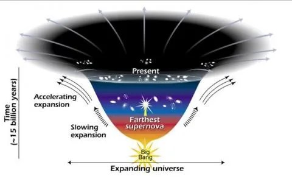
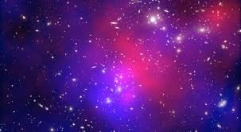

ABOUT The
Dark matter
Dark matter
It turns out that roughly 68% of the universe is dark energy. Dark matter makes up about 27%. The rest - everything on Earth, everything ever observed with all of our instruments, all normal matter - adds up to less than 5% of the universe. Come to think of it, maybe
it shouldn't be called "normal" matter at all, since it is such a small fraction of the universe.
part of dark matter in universe

Expanding universe-Dark matter
One explanation for dark energy is that it is a property of space. Albert Einstein was the first person to realize that empty space is not nothing. Space has amazing properties, many of which are just beginning to be understood. The first property that Einstein discovered is that it is possible for more space to come into existence. Then one version of Einstein's gravity theory, the version that contains a cosmological constant, makes a second prediction: "empty space" can possess its own energy. Because this energy is a property of space itself, it would not be diluted as space expands. As more space comes into existence, more of this energy-of-space would appear. As a result, this form of energy would cause the universe to expand faster and faster. Unfortunately, no one understands why the cosmological constant should even be there, much less why it would have exactly the right value to cause the observed acceleration of the universe.
The first details of the engineering, design and construction of a space station were described by Herman Noordung, in 1928. He described a “wohnrad” or “living wheel“; a wheel shaped rotating space station. He reasoned that the rotation would be required to create artificial gravity for the crewmembers. He described how it would be assembled first on the ground for testing and then its individual
parts launched by rocket for reassembly in orbit.
Dark matter and Dark energy

Another explanation for how space acquires energy comes from the quantum theory of matter. In this theory, "empty space" is actually full of temporary ("virtual") particles that continually form and then disappear. But when physicists tried to calculate how much energy this would give empty space, the answer came out wrong - wrong by a lot. The number came out 10120 times too big.
That's a 1 with 120 zeros after it. It's hard to get an answer that bad. So the mystery continues.
The more shallow the curve, the faster the rate of expansion. The curve changes noticeably about 7.5 billion years ago, when objects in the universe began flying apart as a faster rate. Astronomers theorize that the faster expansion rate is due to a mysterious, dark force that is pulling galaxies apart.